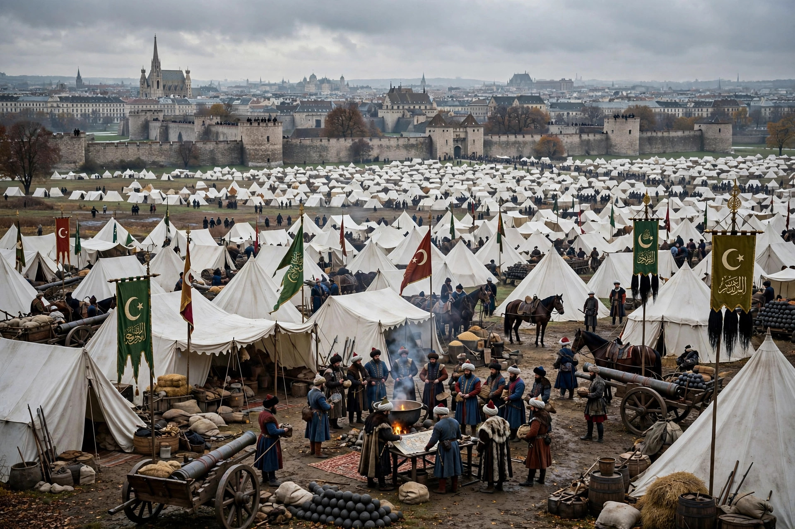

The Siege of Vienna in 1529 was the first attempt by the Ottoman Empire, led by Sultan Suleiman the Magnificent, to capture the city of Vienna, Austria. The siege signalled the pinnacle of Ottoman power in Central Europe and the beginning of a long contest between the Habsburg and Ottoman empires. Heavy autumn rains, disease, early snow and determined resistance forced the Ottomans to withdraw after about two weeks, in mid-October 1529.
| Siege of Vienna (1529) | |
|---|---|
 The Ottoman army before Vienna | |
| Date | 27 September – 15 October 1529 |
| Location | Vienna, Archduchy of Austria |
| Result | Habsburg victory; Ottoman withdrawal |
| Commanders | Suleiman the Magnificent; Nicholas of Salm and Wilhelm von Rogendorf for the defence |
After destroying the Kingdom of Hungary at the Battle of Mohács in 1526, Suleiman backed John Zápolya against Ferdinand I of Habsburg. In 1529 the Sultan marched up the Danube with an army that contemporary estimates put above 100,000 men, retaking Buda on the way. Torrential rains bogged down his heavy guns — most of the great siege cannon were abandoned in the mud — and camels and supplies were lost before the army reached Vienna on 27 September.
Vienna's medieval walls were defended by some 16,000–20,000 soldiers and armed citizens under the elderly Count Nicholas of Salm. Lacking heavy artillery, the Ottomans relied on mining: sappers tunnelled under the walls and detonated charges, opening breaches near the Carinthian Gate, but the defenders counter-mined (using, legend says, bowls of water to detect vibrations) and repelled repeated Janissary assaults at heavy cost to both sides. Supplies ran short and dysentery spread in the Ottoman camp; after a final unsuccessful assault on 14 October, Suleiman burned his camp and retreated, his rearguard harried and stragglers killed by early snowfall.
The siege fixed the frontier between Habsburg and Ottoman power in Hungary for over a century and entered European memory as Christendom's deliverance. A second, larger siege in 1683 ended in the famous relief battle at the Kahlenberg. Nicholas of Salm, who died of wounds received during the siege, was honoured with a celebrated Renaissance tomb.
Suleiman the Magnificent · Battle of Mohács · Battle of Vienna (1683) · Mimar Sinan